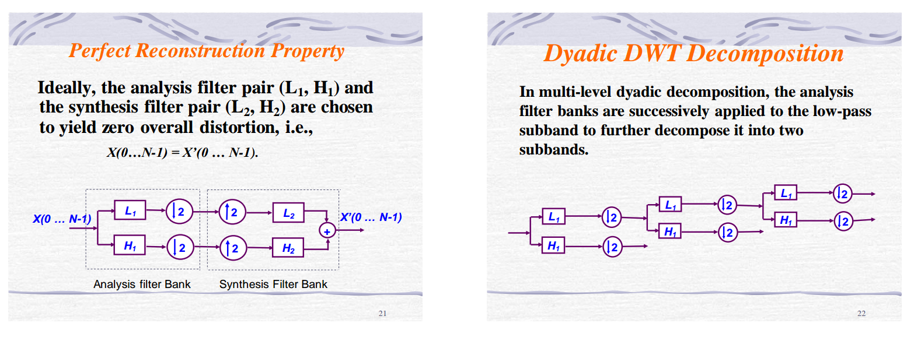
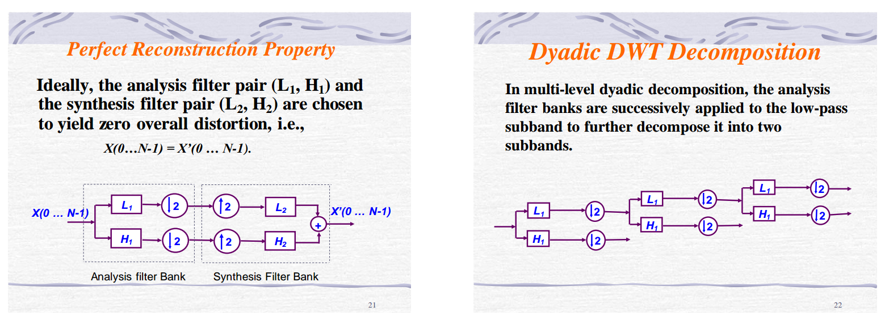
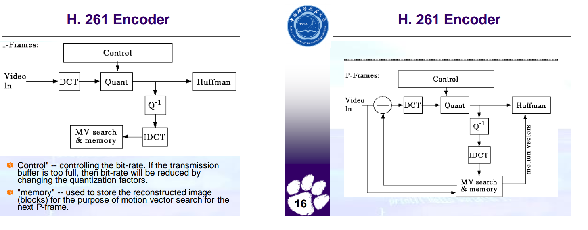
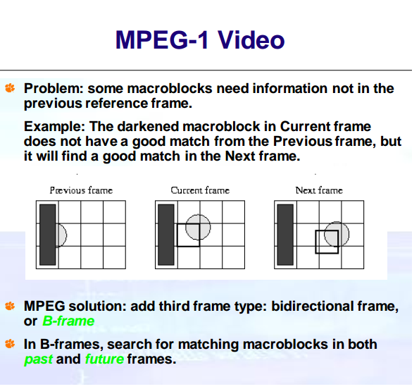
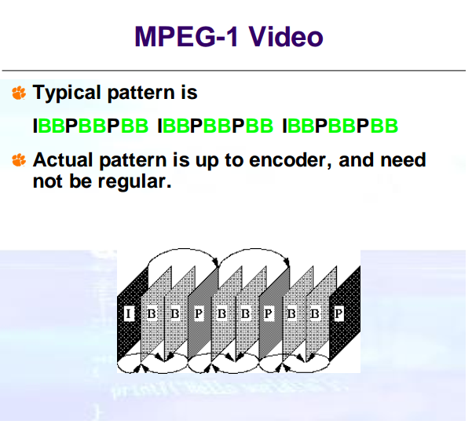

DWT1, high-pass & low-pass
DWT2, lifting scheme

assumes just one symbol appears particularly often in sequence 89400000000000000000000000000000000 we can replace with 894f32
Original Sequence: 111122233333311112222 can be encoded as: (1,4),(2,3),(3,6),(1,4),(2,4) It is a small compression component used in JPEG compression ## Entropy Encoding 熵编码基于信息和概率，是将固定长度的单个符号映射到不定长度的码字，频率大，码字位数小，频率小，码字位数大； ### Shannon-Fano Coding top-down 自顶向下的分解，而且每一次是按照左右概率和均等的原则划分split，但不是最最优的
bottom-up 自底向下的分解，每一次重新排序后只取两个最小的merge；最优
Static Huffman Coding 是two-pass, 因为每一次都要先扫描一遍文件统计词频，然后再扫描一遍进行编码，这给传输带来麻烦；无法运用在工业界
Adaptive Huffman Coding one-pass , 只用扫描一遍即可！实现code decode 关键点： 1. 块：当前相同的weight的node属于同一块！ 2. 权值更新维持sibling property(即要维护huffman的属性): 同一块中要更新的node，更之前要检查是是否是最大编号，不是则需要和最大编号交换(满足highest order 属性)
LZW是假设字符串中有很多重复的序列会出现，对这些重复序列编码，并且是定长编码，如果重复序列多又长，那么压缩效果就会很好。注意原始LZW 词典使用 4k 个entries， 并且开头256(0-255)是ASCII码；因此，我们会看到，后续的新增的entry是从256开始的； LZW-Encoding
w = NIL;
while ( read a character k )
{
if wk exists in the dictionary
w = wk;
else
{
add wk to the dictionary(so wk is stored);
output the code for w;
w = k;
}
}
Original LZW used dictionary with 4K entries, first
256 (0-255) are ASCII codes.
Example: Input string is
"^WED^WE^WEE^WEB^WET".
Steps:
w k Output Index Symbol
NIL ^
^ W ^ 256 ^W
W E W 257 WE
E D E 258 ED
D ^ D 259 D^
^ W
^W E 256 260 ^WE
E ^ E 261 E^
^ W
^W E
^WE E 260 262 ^WEE
......LZW-Decoding
read a character k;
output k;
w = k;
while ( read a character k ) /* k could be a character or a code. */
{
entry = dictionary entry for k;
output entry;
add w + entry[0] to dictionary;
w = entry;
}
Example:
Input string is "^WED<256>E<260><261><257>B<260>T".
Steps:
w k Output Index Symbol
^ ^
^ W W 256 ^W
W E E 257 WE
E D D 258 ED
D <256> ^W 259 D要在屏幕上显示图像，就必须以RGB模式表示图像的颜色。所以，解码时需要把YCrCb模式向RGB模式转换。 由于离散余弦变化要求定义域的对称，所以在编码时把RGB的数值范围从[0，255]统一减去128偏移成[-128，127]。因此解码时必须为每个分量加上128。具体公式如下： R=Y +1.402Cb +128; G=Y-0.34414Cr -0.71414Cb +128; B=Y +1.772Cb +128; 还有一个问题，通过变换得出的R、G、B值可能超出了其定义域，所以要作出检查。如果大于255，则截断为255；如果小于0，则截断为0。
下面补充RGB模式向YCrCb模式的公式： Y =0.299R +0.587G +0.114B ; Cr= -0.1687R - 0.3313G +0.5B +128; Cb=0.5 R - 0.4187G - 0.0813*B+128;
由于我们不需要所有的YUV，因此可以进行采样，就是拿一个U或V代表一小块像素点的UV，从而减少对视觉冲击不大的颜色属性，这样就可以节省更多空间了；常见的采样方式是经常说的4:4:4(等于没采样)，4:2:2;4:1:1,什么意思呢？几乎所有的博客都没写。其实简单点，以4:2：2为例，就是在 2*2 的像素矩阵中，四个像素都保留 Y， 而U和V可以选择其中的两个做代表就行了，另外两个丢弃，以后解码的时候直接用代表的。没理解错的话，就是这个意思。 以上预处理解决之后，才到我们的压缩部分，即压缩输入的是已经变换并采样出来的YUV数据了。
压缩算法： * 有损的离散余弦变换（Discrete Cosine Transform，DCT）； * 无损的预测技术压缩。
数据编码方法： * 哈夫曼编码； * 算术编码；
编码模式： * 基于DCT顺序模式(sequential mode)：编/解码通过一次扫描完成； * 基于DCT递进模式(progressive mode)：编/解码需要多次扫描完成，扫描效果从粗糙到精细，逐级递进； * 无损模式(loss-less mode)：基于DPCM而不是DCT，保证解码后完全精确恢复到原图像采样值； * 层次模式(hierarchical mode)：图像在多个空间多种分辨率进行编码，可以根据需要只对低分辨率数据作解码，放弃高分辨率信息。
在实际应用中，JPEG图像使用的是离散余弦变换（傅里叶变换的一种，将连续信号函数拆分为多个离散余弦函数积分的组合去掉噪音和实现压缩存储)、哈夫曼编码、顺序模式。
是以8*8块为单位的，因为基本假设是，图像一般情况下，会有小块小块的基本上颜色是一致的，这样处理，压缩效果就会很好，变换之后会出现很多0；JPEG 里是对每 8x8 个点为一个单位处理的. 所以如果原始图片的长宽不是 8 的倍数, 都需要先补成 8 的倍数, 好一块块的处理. 另外, 记得刚才我说的 Cr Cb 都是 2x2 记录一次吗? 所 以大多数情况, 是要补成 16x16 的整数块.按从左到右, 从上到下的次序排列 (和我们写字的次序一样). JPEG 里是对 Y Cr Cb 分别做 DCT 变换的. 这里进行 DCT 变换 的 Y, Cr, Cb 值的范围都是 -128~127. (Y 被减去 128)
表是依据心理视觉阀制作, 对 8bit 的亮度和色度的图象的处理效果不错.当然我们可以使用任意的量化表. 量化表是定义在 jpeg 的 DQT 标记后. 一般 为 Y 值定义一个, 为 C 值定义一个. 量化表是控制 JPEG 压缩比的关键. 这个步骤除掉了一些高频量, 损失了很高细节. 但事实上人眼对高空间频率远没有低频敏感.所以处理后的视觉损失很小.另一个重要原因是所有的图片的点与点之间会有一个色彩过渡的过程. 大量的图象信息被包含在低空间频率中. 经过量化处理后, 在高空间频率段, 将出现大量连续的零.这一步也是有损压缩的主要来源
8×8矩阵存储成一维数组如果简单的按照行列存储，就会出现颜色不连续的现象，因此按Z型存储，这样低频就存储在向量的首部了；
DCT之后，8*8矩阵左上角第一个就是DC系数，剩余都是AC系数。对于DC系数，由于所有的8×8矩阵DC系数都是高频部分，比较大，因此对所有的DC系数采用差分编码，就是存储首个DC系数及以后的系数之差，因为差都比较小。
AC系数有很多连续的0，这样就比较适合RLE了，假设有一组矢量 (64 个的后 63 个) 是 57,45,0,0,0,0,23,0,-30,-16,0,0,1,0,0,0, 0 , 0 ,0 , 0,..,0 经过 RLC 压缩后就是 (0,57) ; (0,45) ; (4,23) ; (1,-30) ; (0,-16) ; (2,1) ; EOB
为了提高储存效率, JPEG 里并不直接保存数值, 而是将数值按位数分成 16 组:详细的参考这里
还是来看前面的例子: (0,57) ; (0,45) ; (4,23) ; (1,-30) ; (0,-8) ; (2,1) ; (0,0) 只处理每对数右边的那个: 57 是第 6 组的, 实际保存值为 111001 , 所以被编码为 (6,111001) 45 , 同样的操作, 编码为 (6,101101) 23 -> (5,10111) -30 -> (5,00001) -8 -> (4,0111) 1 -> (1,1)
前面的那串数字就变成了: (0,6), 111001 ; (0,6), 101101 ; (4,5), 10111; (1,5), 00001; (0,4) , 0111 ; (2,1), 1 ; (0,0)
括号里的数值正好合成一个字节. 后面被编码的数字表示范围是 -32767..32767. 合成的字节里, 高 4 位是前续 0 的个数, 低 4 位描述了后面数字的位数.
继续刚才的例子, 如果 06 的 huffman 编码为 111000 69 = (4,5) — 1111111110011001 ( 注: 69=4*16+5 ) 21 = (1,5) — 11111110110 4 = (0,4) — 1011 33 = (2,1) — 11011 0 = EOB = (0,0) — 1010
那么最后对于前面的例子表示的 63 个系数 (记得我们将第一个跳过了吗?) 按位流 写入 JPG 文件中就是这样的: 111000 111001 111000 101101 1111111110011001 10111 11111110110 00001 1011 0111 11011 1 1010
JPEG-Encoding.png
2-level-hierarchical-mode
2-level-hierarchical-mode
3-level-hierarchical-mode
3-level-hierarchical-mode
DWT1, high-pass & low-pass
DWT2, lifting scheme
对于视频，它是由一组连续的图像构成的，并且相邻图像之间存在很大的相关性，因此整体的传输方式会采用到差分；即原始图像和原始图像的差异；以下是 H.261
H.261
Intra-Frame Coding:
I-frame-Coding.png
Quantization is by constant value for all DCT coefficients (i.e., no quantization table as in JPEG).
H.261 I-frame and P-frame Encoder Diagram 
MPEG1
 